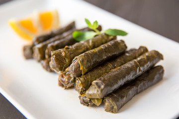

My Favorite Food
Turkish Sarma
I can not cook for myself but my mom makes the best!

Ingredients
- lb pickled grape leaves, pickled in brine then washed and drained
- 4
medium onions, diced
- 2
cups rice, washed under cold water and drained
- 1
cup flat leaf parsley, chopped finely
- 1⁄2
cup olive oil
- 1⁄3
cup pine nuts
- 1⁄4
cup dried currant
- 1
tablespoon dried mint flakes
- 1
teaspoon allspice
- 1⁄8
teaspoon black pepper
- 1⁄8
teaspoon ground cinnamon
- 1
teaspoon granulated sugar
- 2
tablespoons lemon salt
- 1⁄2
lemon, juice of
for more information check out this site